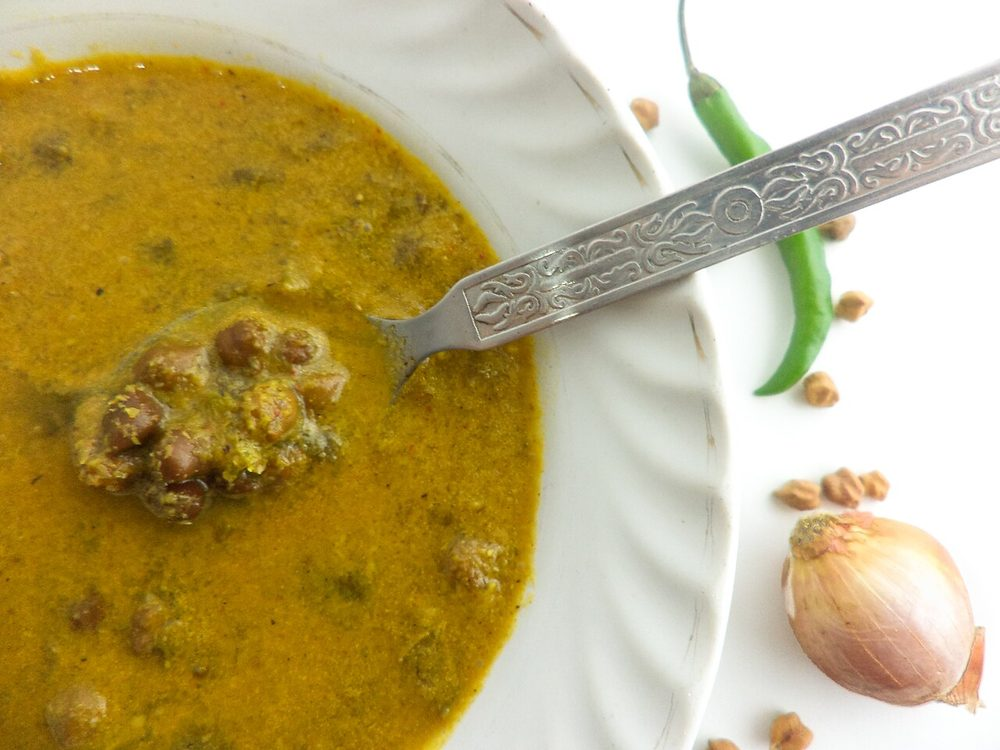

Contains: mustard
Checked against the ingredient list for ten allergens: milk, egg, fish, crustaceans, tree nuts, peanuts, sesame, mustard, soy and gluten. Brands vary, so read the label on anything new to you.
Ingredients
Quantities for 4.
- 1.5 cups Kala Chanablack chickpeas, kadala
- 1 cup, grated Coconutfor roasting and grinding
- 10, sliced Shallot
- 1, chopped fine Onion
- 1 tbsp, chopped Ginger
- 5 cloves, chopped Garlic
- 2 tbsp Coriander Powder
- 1.5 tsp Chilli Powder
- 1/2 tsp Turmeric
- 1/2 tsp Fennel Seeds
- 1/2 tsp Garam Masalaoptional
- 3 tbsp Coconut Oil
- 1 tsp Mustard Seeds
- 2, broken Dried Red Chilli
- 3 sprigs Curry Leaves
- to taste Salt
Cookware
stovetop, pressure cooker, blender
Before you start
- Soak the black chickpeas at least 8 hours or overnight. They are much harder than white chana and will not soften otherwise.
- The colour and depth of this curry come from roasting the coconut almost to the point of burning. Do it first, while the chickpeas cook.
- Grind the roasted coconut with 1/2 cup water to as smooth a paste as your blender will manage. This gravy should not be gritty.
Method
- Pressure cook the soaked chickpeas with 3 cups water, the turmeric and 1 tsp salt for 5 whistles, then 10 minutes on low. Release naturally and keep the cooking liquid.The cooking water is dark and flavourful. Never throw it away. It is the base of the gravy.
- Heat 1 tbsp coconut oil in a heavy pan and fry the sliced shallots for 4 minutes until browning at the edges.
- Add the grated coconut and roast on medium-low, stirring constantly, for 10-12 minutes until it is a deep chocolate brown.Ten minutes feels long and the last two are where it happens. Do not walk away.
- Add the coriander powder, chilli powder and fennel seeds and roast 1 minute more, until the spices darken and smell toasted.
- Cool slightly, then blend with 1/2 cup water to a fine dark paste.
- In the same pan heat the remaining 2 tbsp oil, pop the mustard seeds, then add the broken red chillies, curry leaves, chopped onion, ginger and garlic. Cook 6 minutes until the onion is soft and gold.
- Stir in the ground coconut paste and fry 4 minutes until the oil begins to separate at the edges.
- Add the cooked chickpeas with their liquid and the garam masala. Simmer uncovered 12-15 minutes until the gravy thickens enough to coat a spoon.Mash a spoonful of the chickpeas against the side of the pan to thicken the gravy naturally.
- Taste for salt and rest 10 minutes off the heat before serving with puttu or appam.
Storage
Keeps 4 days refrigerated and freezes well for a month. It thickens overnight; reheat with a splash of water over medium heat until it loosens.
Nutrition Medium estimate
Medium protein: 17+ g a serving, 14% of the calories
| Per serving147 g | Per 100 g | |
|---|---|---|
| Calories | 482+ kcal | 328+ kcal |
| Protein | 17.4+ g | 12+ g |
| Carbohydrate | 57.5+ g | 39+ g |
| of which sugars | 10.7+ g | 7+ g |
| Fibre | 13.4+ g | 9+ g |
| Fat | 22.3+ g | 15+ g |
| of which saturated | 14.9+ g | 10+ g |
| of which unsaturated | 5.0+ g | 3+ g |
The + means ingredients given to taste rather than by weight are counted as zero, so the true figure is a little higher than shown. Worked out from the listed quantities. Some of the ingredient list is given to taste rather than by weight, so treat these as a guide. Ingredients given to taste rather than by weight are counted as zero, so the real figure is a little higher than this. The + says so. Some ingredients have no exact match in the nutrient database and use the nearest equivalent: curry leaves, garam masala, kala chana. Estimated from raw ingredients using USDA FoodData Central. Cooking changes are not modelled, and added salt is excluded, so sodium is not given.
Written and checked against sources, not cooked in a test kitchen. Times, yields, allergens and nutrition are worked out rather than measured, so use your own judgement on doneness and on storing. More in About.